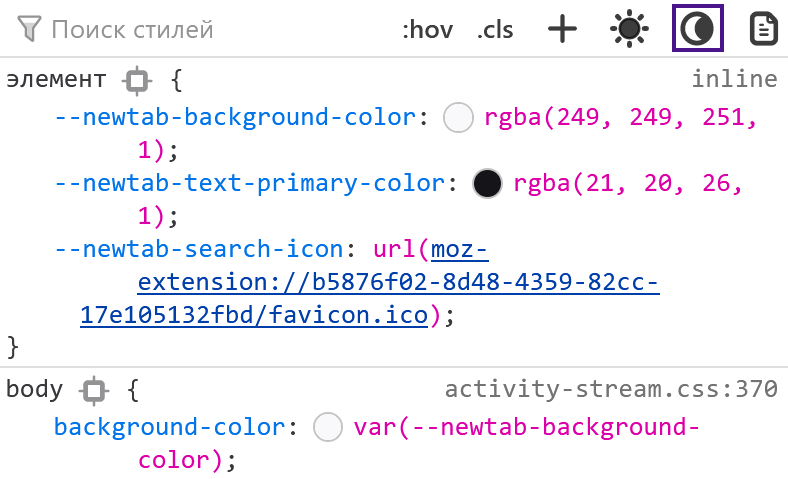
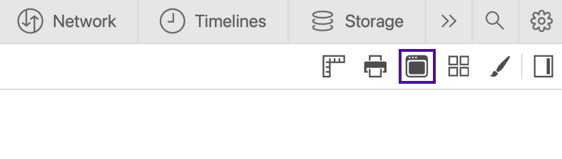

CSS-медиафичи для улучшения доступности
Опубликовано:Когда говорят про доступность и CSS, часто имеют в виду свойства, которые влияют на дерево доступности и скринридеры. Но есть ещё один союзник в битве за доступность интерфейсов — медиафичи.
Медиафича (media feature) — это условие для CSS-директивы @media. Указывает на определённую характеристику устройства или браузера. К примеру, ориентацию экрана (orientation) или режим отображения (display-mode).
В этом посте расскажу про несколько медиафич: prefers-reduced-motion, prefers-color-scheme, inverted-colors, forced-colors, ms-high-contrast, prefers-contrast и prefers-reduced-transparency. Они отслеживают настройки операционной системы. Настройки изменяют пользователи, которых не устраивает дефолтное поведение системы. К примеру, люди с особыми потребностями и те, кто испытывает дискомфорт из-за дефолтного дизайна.
Так, пользователи с эпилептическими приступами отключают анимацию из-за того, что она может вызвать приступ. А некоторые люди с астигматизмом выбирают тёмную тему и уменьшают контрастность, чтобы не болели глаза.
Учёт пользовательских настроек сделает интерфейс сайта более гибким и персонализированным. Это поможет не только повысить его уровень доступности, но и может повысить конверсию. Всегда приятно пользоваться продуктами, которые учитывают твои предпочтения.
Большинство настроек применяется только к операционной системе. Многие из них, те же анимация и уровень контрастности, не изменяют интерфейсы сайтов. Всё зависит от того, учли ли их разработчики. Как раз здесь помогают медиафичи.
Отслеживать пользовательские настройки можно и с помощью JavaScript, но не хочу раздувать пост ещё больше. Остановлюсь только на возможностях CSS.
Пользовательские настройки
Давайте сначала разберёмся, какие системные настройки можно учитывать в веб-интерфейсах уже сейчас или в будущем.
Анимация
Настройки анимации позволяют изменять её скорость или полностью отключить в системе. Не влияют на сайты, если нет специальных стилей.
Кто пользуется настройкой:
- Пользователи с вестибулярными нарушениями и эпилептическими приступами.
- Люди с когнитивными особенностями. Особенно пользователи с синдром дефицита внимания.
Эта настройка есть в большинстве операционных систем.
Цветовая схема
Пользователи могут также изменить настройки цветовой схемы и выбрать цвета, которые будут преобладать в системе. Это либо светлые, либо тёмные оттенки. Настройка не влияет на сайты, если на них не поддерживаются цветовые схемы.
Кто пользуется настройкой:
- Люди с особенностями зрения. Например, со сниженным зрением, глазными болями и повышенной светочувствительностью.
- Пользователи с когнитивными особенностями. К примеру, с синдромом дефицита внимания.
- Все остальные пользователи из-за эстетических предпочтений, привычки или уровня освещения.
Схемы можно выбрать во всех популярных операционных системах. В macOS и iOS есть дополнительная автоматическая тема. Если она выбрана, то днём применяется светлая тема, а ночью — тёмная.
Инвертирование цветов
Режим инвертированных цветов (inverted colors mode) заменяет системные цвета на противоположные, как на негативе. Относится к режиму экранных фильтров.
Цвета изменяются не только в системе, но и во вкладках браузера. Так что пользователи могут выбрать этот режим вместо тёмной темы.

Кто пользуется настройкой:
- Люди с особенностями зрения. Например, с глаукомой или глазными болями.
- Люди с мигренями и головными болями.
- Другие пользователи из-за привычек или освещения.
Эта настройка есть в большинстве операционных систем. На iOS даже два вида инверсии — «Смарт-инверсия» (Smart Invert) и «Классическая инверсия» (Classic Invert). В режиме умной инверсии картинки и видео не инвертируются. В классическом инвертируется весь контент.
Цветовой режим
Режим принудительных цветов (forced colors mode) ограничивает количество цветов, чтобы повысить читаемость текста за счёт изменения контраста текста и фона. В основном используются цвета с высоким контрастом. Этот режим изменяет цвета и в системе, и на сайтах.
Кто пользуется настройкой:
- Пользователи с особенностями зрения.
- Люди с мигренями и головными болями.
- Люди со светочувствительной эпилепсией.
- Пользователи, которым нужно уменьшить визуальный шум для концентрации внимания.
Пока цветовой режим можно выбрать только в Windows. В Windows 10 и более ранних версиях это режим высокой контрастности (Windows High Contrast Mode, коротко WHCM). В Windows 11 — контрастные темы (Contrast Themes).
В режиме высокой контрастности есть несколько готовых наборов цветов:
- чёрный режим высокой контрастности (High Contrast Black);
- белый режим высокой контрастности (High Contrast White);
- высокая контрастность 1 и 2.
Технология замены цветовой палитры зависит от браузера. Она отличается в браузерах на Chromium, Firefox (Quantum), Internet Explorer (Trident) и в старых версиях Edge (EdgeHTML).

В Windows 11 набор контрастных тем изменился:
- Водная (Aquatic).
- Пустыня (Desert).
- Сумерки (Dusk).
- Ночное небо (Night sky).

Если не подходят готовые темы, то можно настроить их самостоятельно. В том числе уменьшить контрастность.
Контрастность
Пользователи могут отдельно повысить или понизить уровень контрастности в системе без изменения яркости экрана.
Кто пользуется настройкой:
- Люди с особенностями зрения. Например, с глаукомой.
- Люди с мигренями и головными болями.
- Пользователи со старыми или некачественными дисплеями.
- Другие пользователи, которым не хватает уровня контрастности из-за освещения.
В macOS и iOS есть режим повышенной контрастности (Increased Contrast Mode). Он увеличивает разницу между оттенками серого и делает границы элементов чётче.
Настройки влияют на внешний вид системы и веб-интерфейсов. В отличие от системных окон, на сайтах изменяется только уровень контрастности. Границы элементов, конечно, чётче сами по себе не становятся.
Прозрачность
Пользователи могут включить или выключить прозрачность фона (transparency). Непрозрачный фон часто выбирают те, кто повышает контрастность.
Прозрачный фон может увеличить когнитивную нагрузку и уменьшить читаемость текста. Поэтому этой настройкой пользуются:
- Люди с особенностями зрения. Например, с астигматизмом или сниженным зрением.
- Пользователи с когнитивными особенностями. К примеру, люди с дислексией или синдром дефицита внимания.
- Люди с мигренями и головными болями.
Прозрачность настраивается в Windows и macOS.
Эти настройки влияют только на прозрачность в интерфейсе системе.
Пара слов про медиатипы
У директивы @media есть несколько медиатипов. Они описывают устройство, на котором отображается документ.
all. Все устройства. Задаётся автоматически, если не указать другой тип.screen. Устройства с экранами. Например, телефоны и ноутбуки.print. Устройства с предварительным предпросмотром и функциями печати. Те же принтеры.speech. Устройства с синтезом речи. К примеру, скринридеры и голосовые помощники.
Медиатип speech может быть интересен с точки зрения доступности. Пока что он не поддерживается браузерами. Раньше поддерживался браузером Opera на движке Presto, но перестал после перехода на Blink.
В будущем может пригодиться для специальных стилей для скринридеров. Например, чтобы применить к нужным элементам CSS-свойства для устройств с синтезом речи.
Медиафичи
А вот теперь переходим к медиафичам, которые помогут сделать веб-интерфейсы доступнее.
У части из них пока не очень впечатляющая поддержка. Что-то может измениться в будущем с развитием CSS. В любом случае про них полезно знать. Может даже захочется поэкспериментировать с этими медиафичами в небольшом пет-проекте уже сейчас.
prefers-reduced-motion
Отслеживает, выбраны ли настройки анимации для уменьшения её интенсивности.
Есть два значения:
no-preference, настройки анимации по умолчанию.reduce, изменённые настройки анимации.
У prefers-reduced-motion хорошая поддержка браузерам — 91.75 %.
Она может пригодиться для любой анимации на сайте. Можно её замедлить или полностью отключить.
Если задать элементам с анимацией animation: none, то это полностью её остановит.
@media (prefers-reduced-motion: reduce) {
.danger-animation {
animation: none;
}
}
Другой пример. На сайте используется scroll-behavior для плавной прокрутки к блокам. Если на странице много контента, то от такой анимации может укачать. В этом случае можно анимировать прокрутку, когда в системе анимация не настроена.
@media (prefers-reduced-motion: no-preference) {
html {
scroll-behavior: smooth;
}
}
Параллакс часто вызывает у пользователей чувство тошноты и головокружение. Чтобы никому не было плохо от картинки с position: sticky, можно заменить значение на relative.
.parallax-scrolling-image {
position: sticky;
}
@media (prefers-reduced-motion: reduce) {
.parallax-scrolling-image {
position: relative;
}
}
Анимация может быть и важной частью сайта. Поэтому лучше отталкиваться от контента. Всегда можно замедлить анимацию так, чтобы она не была опасна для пользователей или не отвлекала их.
Про эту мадиафичу и требования к анимации подробнее писала в посте про доступность для людей с вестибулярными нарушениями и эпилептическими приступами.
Тестирование prefers-reduced-motion
Быстро протестировать можно в инспекторе браузеров на Chromium. Зайдите в «Другие инструменты» (More tools), выберите вкладку «Отрисовка» (Rendering) и включите «Эмулировать медиафункцию CSS prefers-reduce-motion» (Emulate CSS media feature prefers-reduce-motion).
Изменить настройки анимации можно также вручную.
- Windows 10: Настройки (Settings) → Специальные возможности (Ease of Access) → Экран (Display) → Показывать анимацию в Windows (Show animations in Windows).
- Windows 11: Настройки (Settings) → Специальные возможности (Accessibility) → Визуальные эффекты (Visual effects) → Эффекты анимации (Animation effects).
- macOS: Системные настройки (System Preferences) → Универсальный доступ (Accessibility) → Монитор (Display) → Уменьшить движение (Reduce Motion).
- iOS: Настройки (Settings) → Универсальный доступ (Accessibility) → Движение (Motion) → Уменьшение движения (Reduce Motion).
- Android: Настройки (Settings) → Специальные возможности (Accessibility) → Экран (Display) → Удалить анимации (Remove animations).
prefers-color-scheme
Определяет выбранную цветовую схему.
Доступные значения:
light, для светлой схемы.dark, для тёмной схемы.
У prefers-color-scheme высокая глобальная поддержка — 91.68 %.
Разработчики могут управлять всеми стилями при работе с тёмными темами сайта. Особенно важно обратить внимание на цвета:
- фонов,
- текстов,
- интерактивных элементов в разных состояниях,
- иконок и изображений,
- других декоративных элементов.
Например, картинки в тёмной теме можно сделать не такими контрастными с помощью filter, а ещё поменять значения background-color и color.
.body {
color: black;
background-color: white;
}
@media (prefers-color-scheme: dark) {
.body {
color: white;
background-color: black;
}
.image {
filter: brightness(.8) contrast(1.2);
}
}
В примере использую чистый чёрный и белый для читаемости кода. В реальном мире настолько контрастных цветов лучше избегать. Белый текст на чёрном фоне обычно труднее читать большинству пользователей.
Тестирование prefers-color-scheme
Быстро протестировать можно в инспекторе браузеров на Chromium. Найдите в «Другие инструменты» (More tools) вкладку «Отрисовка» (Rendering) и выберите тёмную тему в опции «Эмулировать медиафункцию CSS prefers-color-scheme» (Emulate CSS media feature prefers-color-scheme).
В Firefox темы находятся в первой вкладке с инспектором. Переключатели расположены над стилями. Переключатель с иконкой луны включает имитацию тёмной схемы, с солнцем — имитацию светлой.
В Safari эмуляция тёмной схемы включается в веб-инспекторе во вкладке «Элементы» (Elements). Переключатель называется «Force Dark Appearance» и находится в панели под вкладками.
Можно переключить схему и вручную.
- Windows: Настройки (Settings) → Персонализация (Personalization) → Цвета (Colors) → «Тёмный» в пункте про режим приложения.
- macOS: Системные настройки (System Preferences) → Основные (General) → «Тёмное» или «Автоматически» в разделе про оформление (Appearance).
- iOS: Настройки (Settings) → Экран и яркость (Display and Brightness) → «Тёмное» (Dark) в пункте про оформление (Appearance).
- Android: Настройки (Settings) → Экран (Display) → Тёмная тема (Dark Theme).
inverted-colors
Отслеживает режим инвертированных цветов.
Есть два значения:
none, режим не выбран, в системе отображаются цвета по умолчанию.inverted, режим инвертированных цветов выбран.
Глобальная поддержка inverted-colors — 17.56 %. Пока поддерживается только в десктопном и мобильном Safari.
Обычно для этого режима не требуются дополнительные стили, кроме отмены инвертирования видео и картинок. Это можно сделать при помощи filter.
@media (inverted-colors: inverted) {
img,
video {
filter: invert(100%);
}
}
Тестирование inverted-colors
Протестировать стили для режима инвертирования можно только вручную.
- macOS: Системные настройки (System Preferences) → Универсальный доступ (Accessibility) → Монитор (Display) → Инвертировать цвета (Invert colors).
- iOS: Настройки (Settings) → Универсальный доступ (Accessibility) → Дисплей и размер текста (Display & Text Size) → «Смарт-инверсия» (Smart Invert) или «Классическая инверсия» (Classic Invert).
forced-colors
Отслеживает режим принудительных цветов. Например, режим высокой контрастности в Windows 10.
Поддержка forced-colors невысокая — 31.6 %. Медиафича доступна в Firefox с 89 версии, Chrome с 89 и Edge с 79. Рекомендуется использовать в новых версиях Edge вместо устаревшей ms-high-contrast.
Сейчас активно дорабатывается и может измениться.
У медиафичи два значения:
none, режим принудительных цветов не выбран. Цветовая палитра не ограничена.active, режим принудительных цветов включён.
Хорошо сочетается с prefers-color-scheme.
Когда браузер узнаёт о выборе режима принудительных цветов, то ограничивает цветовую палитру до небольшого набора цветов. Какие-то значения вообще отменяет.
У следующих свойств статические цвета (заданные разработчиками) заменяются на динамические (системные):
color.background-color.border-color.outline-color.column-rule-color.text-decoration-color.text-emphasis-color.webkit-tap-highlight-color.fill.stroke.flood-color.stop-color.lighting-color.
А для этих свойств принудительно задаются другие значения:
color-scheme—light dark.background-imageбезurlполучает значениеnone, если это интерактивный элемент. Исключение — кнопки. Так работает в Internet Explorer и легаси Edge.box-shadow—none.text-shadow—none.scrollbar-color—auto.
В случае высококонтрастного режима лучше отключить внутреннего дизайнера. Он нужен людям не ради эстетики, а для повышения читаемости контента. Так что медиафичу стоит использовать с умом и только тогда, когда это действительно нужно. В основном браузер сам справляется с этой задачей.
Главное правило для работы со стилями в этом режиме — вместо статических цветов используйте динамические. Их можно задать при помощи специальных ключевых слов для системных цветов (CSS system color keywords). Например, Window для фона окна, ButtonText для цвета текста кнопок и WindowText для цвета текста. Так мы дадим системе знать, на какой цвет нужно заменить наш статический.
Другая важная особенность режима в том, что браузеры принимают решение о применении системных стилей на основе семантики элементов. Когда на сайте дивная вёрстка, то браузер будет применять ко всем элементам стили обычного текста. Это касается и элементов с ARIA-ролями. Например, <div role="link"> не настоящая ссылка, поэтому к элементу не применятся системные цвета текста ссылок.
Если поверх картинки размещён текст, то под ним появится чёрная подложка (backplate). Её стилями управлять нельзя.

Если с семантикой всё в порядке и хочется оптимизировать сайт под режим высокой контрастности, то внимание надо обратить всего на несколько моментов. Это SVG, картинки с прозрачным фоном, чекбоксы и радиокнопки, а также элементы с box-shadow. Их чаще всего надо дотюнивать.
На картинке собрала с разных сайтов элементы, с которыми могут возникнуть трудности у пользователей режима высокой контрастности.
Кнопки и ссылки с SVG-иконками сливаются с фоном или становятся менее контрастными. Чёрный логотип или тёмная картинка с прозрачным фоном тоже могут слиться с фоном. В случае чекбокса или радиокнопки непонятно, выбраны они или нет.
В этом примере улучшаем кнопки с иконками в режиме высокой контрастности с помощью ключевого слова buttonText. Так они получат системный цвет текста кнопки.
@media (forced-colors: active) {
.button__svg {
fill: buttonText;
}
}
Проверить то, как это работает в Windows, можно в демо с кнопкой c инлайновым SVG.
Пока поддержка forced-colors не такая высокая, а -ms-high-contrast уже устарела. Так что сейчас лучше настраивать стили для режима высокой контрастности без медиавыражений.
Например, так задаём для индикатора фокуса стили и в box-shadow, и в outline.
.button {
border: 1px solid transparent;
}
.button:focus {
box-shadow: 0 0 4px 1px darkslateblue;
outline: 2px solid transparent;
}
В режиме высокой контрастности свойства outline применятся вместо отменённых системой box-shadow. В обычном режиме будет виден только box-shadow.
Для однотонных SVG-иконок лучше использовать ключевое слово currentColor для fill и stroke. Так они будут наследовать системный цвет родителя.
Представим, что у нас есть ссылка с инлайновой SVG-иконкой.
/* В обычном режиме цвет ссылки — indigo */
/* В режиме высокой контрастности переопределится системой */
.link {
color: indigo;
}
/* SVG наследует цвет indigo в обычном режиме */
/* В режиме высокой контрастности наследует системный цвет */
.link__svg {
fill: currentColor;
}
Возьмём для примера это демо со ссылкой на Twitter. Если включим чёрный режим высокой контрастности, то текст ссылки и иконка станут системного жёлтого.
К сожалению, в прошлом году это поведение сломалось в браузерах на Chromuim. Это произошло из-за изменений в CSS-спецификации. Поэтому сейчас SVG с currentColor остаются статического цвета в режиме принудительных цветов.
Временное решение проблемы — свойство forced-color-adjust.
Если применим forced-color-adjust со значением auto к SVG, то он унаследует цвет родительского элемента при переключении в режим высокой контрастности.
.link {
color: indigo;
}
.link__svg {
fill: currentColor;
/* Фикс для режима высокой контрастности */
forced-color-adjust: auto;
}
Проверить, как работает хак, можно в демке с фиксом со ссылкой на Twitter.
Другой вариант — значение preserve-parent-color. Оно помогает элементу наследовать значение родителя, если не используются другие способы. Например, inherit или currentColor. В обычном режиме ведёт себя как значение none. Пока в Chromium работают над его имплементацией.
Ещё одно значение forced-color-adjust — none. Отменяет замену статических цветов на динамические. В большинстве случаев его не рекомендуется использовать. Пригодится в ситуациях, когда важно сохранить цвета. Хороший пример можно посмотреть в демке с цветовыми палитрами.
Тестирование forced-colors
Включить режим высокой контрастности можно несколькими способами.
- Windows 10: Настройки (Settings) → Специальные возможности (Ease of Access) → Высокая контрастность (High Contrast).
- Windows 11: Настройки (Settings) → Специальные возможности (Accessibility) → Контрастные темы (Contrast themes).
- Шорткат — Alt + Левый Shift + PrintScreen.
ms-high-contrast
Отслеживает, выбрал ли пользователь режим высокой контрастности. Соответствуют высококонтрастным темам в Windows до 11 версии.
Медиафича нестандартная и уже устарела. Вместо неё лучше использовать более современный аналог forced-colors. Может понадобиться, когда нужно поддерживать Internet Explorer и Edge 18 версии и ниже.
Доступные значения:
black-on-white, для режима с чёрным текстом на белом фоне.white-on-black, для режима с белым текстом на чёрном фоне.active, для всех остальных комбинаций цветов.
При работе со стилями учитывать всё то же, что и для forced-colors.
Единственная особенность — медиафича убирает background-image у интерактивных элементов. В примере изменяем это поведение:
@media (-ms-high-contrast: black-on-white) {
.interactive-element {
background-image: url("bg-image.png");
}
}
prefers-contrast
Определяет выбор настроек, которые уменьшают или увеличивают разницу в контрастности между цветами.
Пока prefers-contrast не обязательно отслеживает высокий уровень контрастности, как в режиме высокой контрастности. Но стоит иметь в виду, что в будущем медиафича может быть теснее с ним связана.
Доступные значения:
no-preference, настройки не выбраны.high, контрастность увеличена. Предлагается заменить на more.low, контрастности понижена. Предлагается заменить на less.forced, в системе выбран режим принудительных цветов. Например, режим высокой контрастности Windows. Предлагается заменить на custom.
Глобальная поддержка prefers-contrast не такая высокая — 13.37 %. Поддерживается в мобильном и десктопном Safari и в Chrome с 96 версии.
При учёте этого режима можно добавлять любые стили, которые улучшат пользовательский опыт.
В этом примере изменяем border у элемента, чтобы стили были видны при высокой контрастности.
.image {
border: 3px dashed lightpink;
}
/* Стили для повышенной контрастности */
@media (prefers-contrast: more) {
.image {
border: 3px solid black;
}
}
А здесь все медиавыражения определяют режим высокой контрастности.
@media (forced-colors: active) {
/* Нужные стили */
}
@media (prefers-contrast: forced) {
/* Нужные стили */
}
@media (prefers-contrast: custom) {
/* Нужные стили */
}
Посмотреть на forced-colors в действии можно уже сейчас в Safari в демке c милой выдрой.
Тестирование prefers-contrast
Для тестирования медиафичи нужно включить настройку увеличения контрастности.
- macOS: Системные настройки (System Preferences) → Универсальный доступ (Accessibility) → Монитор (Display) → Увеличить контрастность (Increase Contrast).
- iOS: Настройки (Settings) → Универсальный доступ (Accessibility) → Дисплей и размер текста (Display & Text Size) → Увеличение контраста (Increase Contrast).
prefers-reduced-transparency
Отслеживает отключение или уменьшение прозрачности в системе.
Значения медиафичи:
no-preference, пользователь не менял настройки прозрачности.reduce, прозрачность уменьшена или отключена.
Пока prefers-reduced-transparency экспериментальная. Её не поддерживает ни один браузер.
В будущем так можно отменять opacity у элементов.
.transparency-bg {
opacity: 0.5;
}
@media (prefers-reduced-transparency: reduce) {
.transparency-bg {
opacity: 1;
}
}
О чём не рассказала
В этом посте не разбирала только одну медиафичу для пользовательских настроек — prefers-reduced-data. Она нужна для отслеживания настроек объёма получения данных.
Связана с перфомансом и тоже пригодится для доступности. Больше подробностей в «Creating websites with prefers-reduced-data».
Выводы
CSS-медиафичи дают нам возможность учитывать на сайтах пользовательские настройки. С их помощью можно в несколько строк кода улучшить пользовательский опыт и сделать интерфейс доступнее и безопаснее.
Уже сейчас можно смело использовать prefers-reduced-motion и prefers-color-scheme. Пока не так хорошо поддерживаются forced-colors, inverted-colors и prefers-contrast, но их поддержка постепенно расширяется. У prefers-reduced-transparency, скорее всего, всё ещё впереди. А ms-high-contrast устарела, так лучше не задавать стили для режима высокой контрастности в современных браузерах.
Что почитать и посмотреть
- CSS Color Adjustment Module Level 1.
- Media Queries Level 5.
- Operating System and Browser Accessibility Display Modes, Эрик Бейли.
- A Complete Guide to CSS Media Queries, Андрес Галанте.
- Revisiting prefers-reduced-motion, the reduced motion media query, Эрик Бейли.
- Respecting Users’ Motion Preferences, Мишель Баркер.
- Reduced motion auto-playing videos and background animations, Скотт О’Хара.
- thoughtbot.com, dark mode, and other user preferences, Эрик Бейли.
- A Complete Guide to Dark Mode on the Web, Adhuham.
- Светлая и тёмная темы на CSS: кастомные свойства, подключение, фолбэк для старых браузеров, видео Вадима Макеева.
- Using JavaScript to detect high contrast and dark modes, Скотт О’Хара.
- The CSS prefers-color-scheme user query and order of preference, Сара Суайдан.
- Using the Increased Contrast Mode CSS media query, Мартин Андерхилл.
- OS: High Contrast versus Inverted Colors, Адриан Розелли.
- Working with High Contrast Mode, Эрик Бейли. Презентация доклада.
- WHCM and System Colors, Адриан Розелли.
- Finessing forced-colors: tailoring the High Contrast experience, доклад Мелани Ричардс с W3C Developer Meetup.
- Styling for Windows high contrast with new standards for forced colors, Мелани Ричардс и Элисон Махер.
- Quick Tips for High Contrast Mode, Сара Хигли.
- CurrentColor SVG in forced colors modes, Мелани Ричардс.
И снова спасибо Василию Дудину за помощь с редактированием.
Другие статьи
- Разбираемся со skip link Следующая статья →
- ARIA-атрибут role с несколькими значениями ← Предыдущая статья